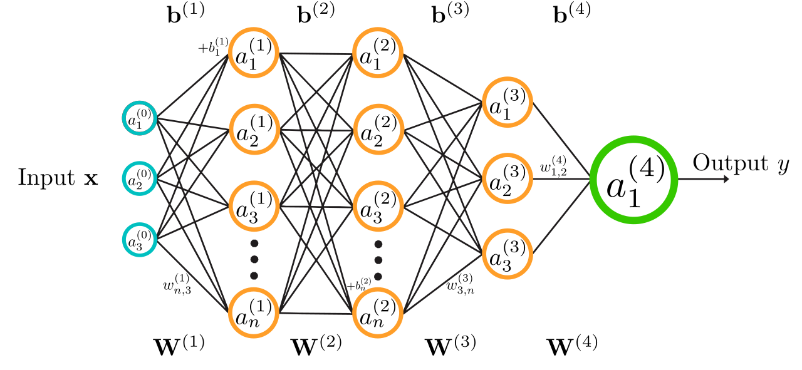
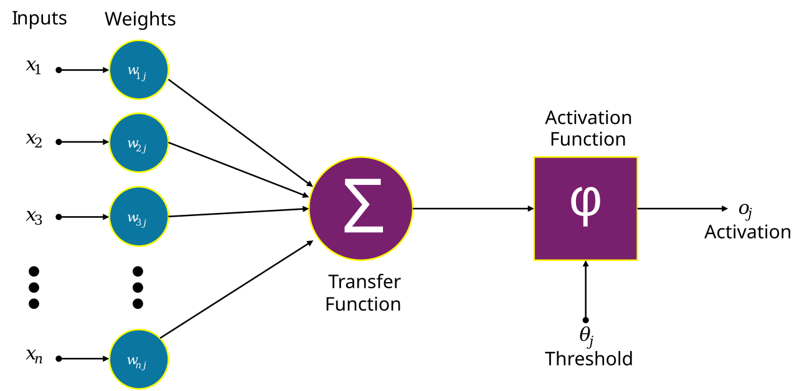
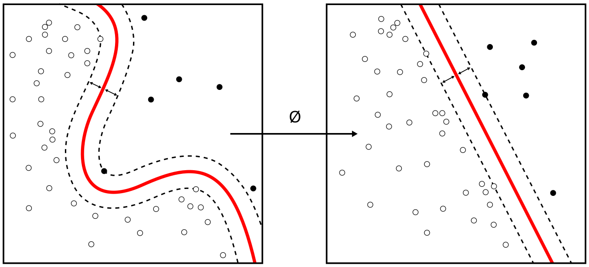

The Epochs Learning Guide
Inside a Neural Network
A visual guide to how neural networks turn data into predictions, discover patterns, and improve through training.
01 / THE BIG IDEA
What is a neural network?
A neural network is a machine-learning model made from connected mathematical units called artificial neurons. It learns a mapping from inputs to outputs by adjusting internal parameters, mainly weights and biases, using examples from data.
In traditional programming, a developer writes explicit rules. In machine learning, we provide examples and a learning procedure; the model adjusts its parameters to capture patterns that help produce the desired output.
Follow the information
During a prediction, information moves from the input layer, through hidden layers, to the output layer. This is called a forward pass.

The architecture describes how the units are arranged. Training determines the values of their parameters.
02 / THE ARTIFICIAL NEURON
What happens inside one neuron?
A neuron multiplies each input by a weight, adds the results and a bias, then applies an activation function.

- Weights control how strongly each input contributes.
- Bias shifts the weighted sum and helps determine when the neuron responds.
- Activation function transforms the result. Non-linear activations allow networks to represent complex relationships.
Common activation functions
| Function | Intuition | Typical role |
|---|---|---|
| ReLU | Returns 0 for negative inputs; otherwise returns the input. | Common hidden-layer choice. |
| Sigmoid | Maps values to (0, 1). | Often used for a single binary output. |
| Tanh | Maps values to (−1, 1). | Zero-centred activation used in some networks. |
| Softmax | Converts scores into values that sum to 1. | Often used for mutually exclusive classes. |

03 / LAYERS & REPRESENTATIONS
Why do networks need hidden layers?
A single neuron with two inputs creates a linear decision boundary: a straight line that separates two regions. This works for linearly separable data, but many datasets contain curved or intertwined patterns.
Hidden layers transform original inputs into intermediate representations. Individual neurons may respond to simple patterns; later layers combine those responses into more useful features.

Width is the number of neurons in a layer. Depth is the number of layers. More units or layers can increase representational capacity, but also increase computation and may make training harder. Bigger is not automatically better.
04 / HOW LEARNING WORKS
How does a neural network learn?
Training repeatedly compares predictions with known targets and adjusts parameters to reduce error. Four ideas work together: forward propagation, a loss function, backpropagation, and an optimizer.

1. Forward propagation
The input passes through each layer in order. The final layer produces the prediction.
2. Loss: how wrong was the prediction?
A loss function measures prediction error. Mean squared error (MSE) is common for regression; binary or categorical cross-entropy is common for classification. Choose a loss that matches the task and output representation.
3. Backpropagation: calculate gradients
Backpropagation applies the chain rule to calculate how the loss changes with respect to each trainable parameter. It calculates gradients; it does not itself perform the parameter update.
4. Optimization: update parameters
An optimizer such as stochastic gradient descent (SGD) or Adam uses gradients to update weights and biases. The learning rate controls the update size: too large can make training unstable; too small can make learning slow.
Here, θ represents trainable parameters, η is the learning rate, and ∇L is the gradient of the loss.
What is an epoch?
An epoch is one complete pass through the training dataset. Data is often divided into smaller batches, and the optimizer updates parameters after processing each batch. One epoch therefore usually contains multiple update steps.
05 / LEARN BY EXPERIMENTING
Build intuition with the playground
Change one setting at a time and observe the result. If your playground exposes these controls, try these experiments:
Start simple
Choose data that a straight line can separate. Train a small network.
Observe: Does a simple boundary separate the classes?
Add a hidden layer
Try a dataset with a curved or complex pattern, then add a hidden layer.
Observe: How does the decision boundary change?
Change learning rate
Compare low, moderate, and high learning rates while keeping other settings fixed.
Observe: Does loss decrease slowly, smoothly, or erratically?
Compare activations
Compare ReLU with another available activation, resetting training between runs.
Observe: Does the learned boundary or training behaviour change?
Increase capacity
Add neurons or another hidden layer and compare with the smaller model.
Observe: Does validation performance improve too?
Watch over epochs
Track the loss and boundary over time instead of judging a single moment.
Observe: When does improvement slow or become unstable?
The exact controls and metrics depend on your implementation. These are suggested experiments, not claims about a specific interface.
06 / GENERALIZATION
Learn patterns, not just examples
A model can perform well on examples it has seen but poorly on new data. The goal is to learn patterns that generalize, not simply minimize training error.
| Situation | Typical sign | What to investigate |
|---|---|---|
| Underfitting | Training and validation performance are both poor. | Features, model capacity, optimization, or training duration. |
| Useful fit | Both sets show useful, reasonably consistent performance. | Confirm using a held-out test set. |
| Overfitting | Training performance improves while validation performance stalls or worsens. | More representative data, regularization, early stopping, or a smaller model. |

- Training set: used to learn model parameters.
- Validation set: used to compare configurations and guide choices such as early stopping.
- Test set: held back for a final estimate after model selection.
For imbalanced classification, accuracy alone can be misleading. Precision, recall, F1 score, and a confusion matrix can reveal which kinds of errors the model makes.
07 / NETWORK FAMILIES
Different architectures suit different data
A fully connected feed-forward network is a useful starting point, but it is only one family of neural networks.
Multilayer perceptron
Dense layers; often used for tabular data and introductory classification or regression.
Convolutional network
Uses filters to detect local patterns; common in image tasks.
Recurrent network
Processes sequences using recurrent state. LSTM and GRU variants address some limitations of basic RNNs.
Graph neural network
Learns from nodes, edges, and their relationships in graph-structured data.
Generative adversarial network
Trains a generator and discriminator in competition, often for data generation.
Transformer
Uses attention to relate elements in a sequence or set; widely used in language and multimodal tasks.

Choose an architecture based on the structure of the data, the task, available data and compute, and validation results.
08 / QUICK REFERENCE
Neural-network glossary
Activation: output of a neuron after its activation function.
Bias: a trainable offset added to a weighted sum.
Epoch: one complete pass through the training dataset.
Feature: an input variable or a useful learned representation.
Gradient: derivatives describing how a quantity changes with parameters.
Inference: using a trained model to produce predictions.
Learning rate: controls the size of optimizer updates.
Loss: numerical objective measuring prediction error.
Parameter: a learned value, such as a weight or bias.
Hyperparameter: a setting chosen by the practitioner, such as learning rate or batch size.
YOUR TURN
Make the invisible visible.
Return to the playground above. Change one setting, train the network, and explain what changed in the decision boundary, loss, or predictions. Repeat with another setting to build stronger intuition.
Further reading & Image Attributions
- Jared Wilber, “Neural Networks: A Visual Introduction”, MLU-Explain. Visual explanations of neurons, activations, forward passes, loss, backpropagation, and architectures.
- Kaz Sato, “Understanding neural networks with TensorFlow Playground”, Google Cloud Blog, 26 July 2016. Discusses single-neuron classification, hidden layers, feature transformations, and deeper abstractions through Playground experiments.
- TensorFlow Keras guide for building and training neural-network models.
- Dive into Deep Learning for a broader textbook-style treatment.
- Educational diagrams sourced from open repositories under Creative Commons licenses (CC0, CC BY 4.0, CC BY 3.0, and CC BY-SA 4.0). Detailed licensing and contributor registry recorded in image-sources.md.
This educational guide uses verified, openly licensed educational illustrations from Wikimedia Commons and peer-reviewed educational publications. Diagrams replace prior inline schematics with authentic reference diagrams.